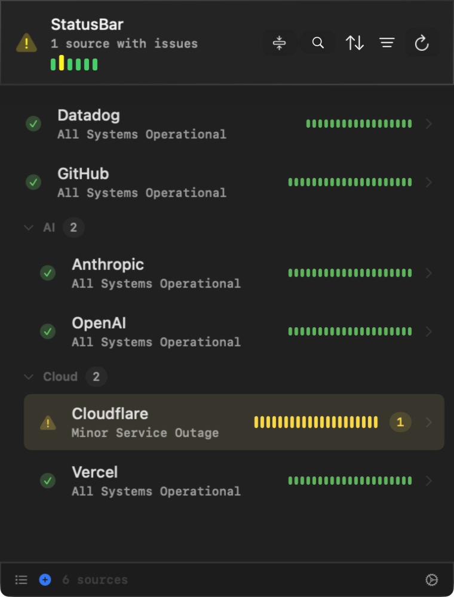
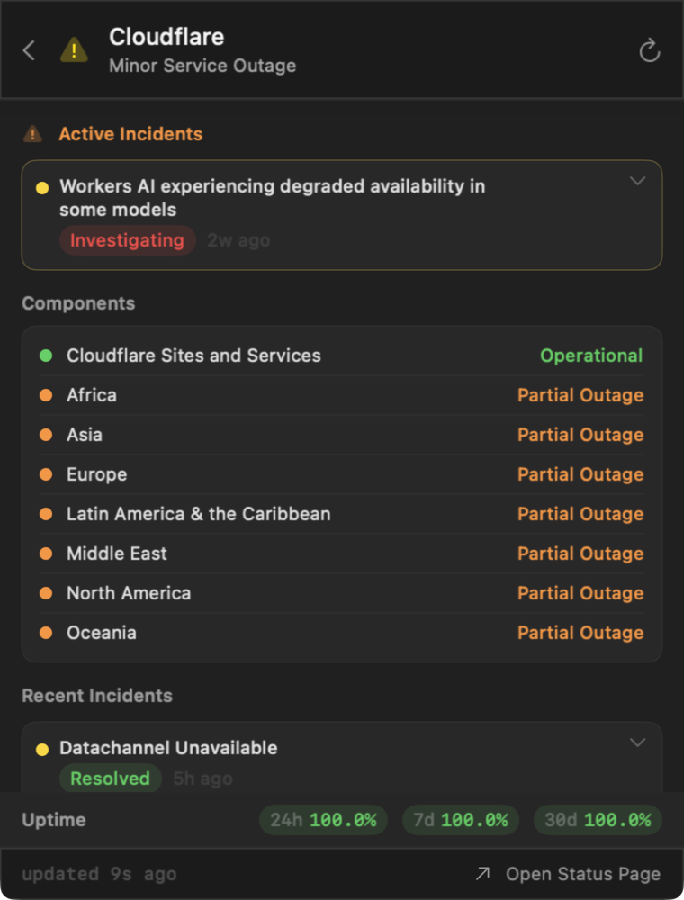
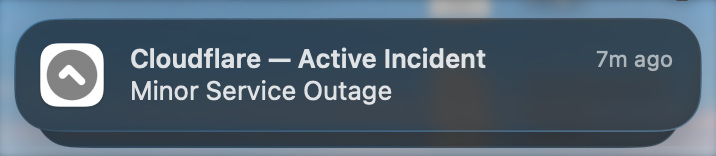

all systems operational
StatusBar watches every status page you depend on — GitHub, Stripe, Cloudflare, even your self-hosted Gatus — from the macOS menu bar. One glance answers the question.
free & open source · zero telemetry · macOS 26+
14:32 — Cloudflare: minor service outage. You knew before the retries did.

watch
Click the menu bar icon — or press the global hotkey — to see every service at once, with per-check sparklines and grouping. Search, sort, and filter when the list grows. A badge on the icon tells you how many sources have issues without opening the popover.

Tap any source to see individual components and active incidents. Expand an incident to follow the full timeline — from investigation through resolution — without leaving the menu bar.

Lives in the menu bar as a checkmark when all clear, or a warning with a badge count when issues arise. Native notifications fire the moment a status changes — and recover alerts when it clears. Snooze noisy sources for an hour or a day.
severity
Every provider’s status vocabulary maps onto the same four levels — the menu bar icon always shows the worst one.
operational
All systems normal. The icon stays a quiet checkmark.
degraded
Performance issues. Worth a glance, not a page.
partial outage
Some services affected. Notifications fire.
major outage
Significant disruption. You already know why the graphs fell over.
install
brew tap alexnodeland/tap
brew install --cask statusbarUpdates arrive with brew upgrade — or let the app update itself.
Grab StatusBar-vX.Y.Z.dmg from the latest release, drag it to Applications, and approve it under System Settings → Privacy & Security on first launch.
Universal binary — Apple Silicon and Intel. Ad-hoc signed; see the FAQ.
faq
Yes — free and open source under the MIT license. If it saves you a tab or a headache, you can support development on Gumroad for $2.99.
Any Atlassian Statuspage, incident.io, or Instatus status page — plus your own infrastructure via self-hosted Gatus. The provider is detected automatically from the URL.
None. Zero telemetry, no analytics, no intermediary servers — your Mac talks directly to the status pages you configure. Read the privacy policy.
Current builds are ad-hoc signed rather than notarized, so macOS shows a one-time warning. Approve the app under System Settings → Privacy & Security, or build from source.
StatusBar checks GitHub Releases and can download and install updates automatically — or via brew upgrade if you installed with Homebrew. Release notes appear right in Settings.
Open a GitHub issue or email alex@ournature.studio.
StatusBar is MIT-licensed and sends zero telemetry. If it has saved you a tab — or an incident call — you can chip in.
Support StatusBar — $2.99